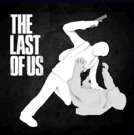

Казни
Казни

Казни - загружаемый материал, доступный для сетевого режима в Одни из Нас (англ. The
Last of Us), который позволяет убивать противника с помощью особых подборок казней. Все подборки
можно приобрести в PlayStation Store или PlayStation Network.
Список
- Казни с использованием пистолета
- Казни с использованием револьвера
- Казни с использованием дробовика
- Казни с использованием винтовки
- Казни с использованием снайперской винтовки
- Тихие казни ножом
- Казни с использованием автоматической винтовки
- Казни ножом на земле
- Казни с использованием лука